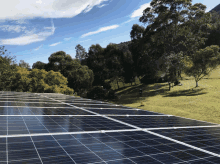

SolarClean: Energia Limpa, Desempenho Máximo
A sujeira, poeira e detritos acumulados podem reduzir a eficiência de suas placas solares em até 30%. A SolarClean é especialista em limpeza e manutenção profissional, utilizando técnicas e produtos que não danificam seu equipamento e garantem que você aproveite todo o potencial do seu investimento, economizando mais na conta de luz e prolongando a vida útil do seu sistema.
Nossos Principais Serviços
Oferecemos um portfólio completo para cuidar do seu sistema fotovoltaico:
- Limpeza Profissional e Ecológica dos Painéis
- Inspeção Visual e Diagnóstico de Componentes
- Manutenção Preventiva e Corretiva
- Análise de Desempenho e Geração de Energia
- Reaperto de Conexões e Estruturas
Por Que Escolher a SolarClean?
Garantimos um serviço de qualidade que se traduz em vantagens reais para você.
Máxima Eficiência
Placas limpas captam mais luz solar, gerando muito mais energia para sua casa ou empresa.
Aumento da Vida Útil
A manutenção previne problemas como superaquecimento e corrosão, protegendo seu investimento.
Segurança em Primeiro Lugar
Nossa equipe utiliza equipamentos de segurança (NR-35) para trabalhos em altura.
Equipe Especializada
Profissionais treinados para manusear seu sistema fotovoltaico com o máximo cuidado.
Nossos Planos e Preços
| Serviço | Descrição | Preço (a partir de) |
|---|---|---|
| Limpeza Básica | Limpeza de até 10 painéis | R$ 150,00 |
| Limpeza Completa | Limpeza de 11 a 30 painéis com inspeção visual | R$ 250,00 |
| Plano Premium | Limpeza anual + manutenção preventiva para até 30 painéis | R$ 400,00 |
Veja Nosso Processo em Ação
Nosso processo de limpeza é rápido, seguro e eficiente. Utilizamos água desmineralizada e equipamentos específicos que removem toda a sujeira sem riscar ou danificar as placas. Veja ao lado como devolvemos a potência máxima ao sistema de nossos clientes.
Perguntas Frequentes (FAQ)
Com que frequência devo limpar minhas placas solares?
Recomendamos a limpeza a cada 6 a 12 meses, dependendo da localização e do nível de poeira e poluição na sua região.
A limpeza profissional pode danificar minhas placas?
Não, utilizamos equipamentos e produtos específicos, como água desmineralizada e escovas macias, que garantem a limpeza sem riscos ou danos aos seus painéis.
Vocês oferecem garantia do serviço?
Sim, garantimos a satisfação com nossos serviços. Em caso de dúvidas ou problemas, entre em contato conosco.